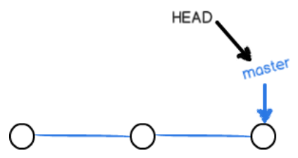

分支

1.主分支
在版本回退里，你已经知道，每次提交，Git都把它们串成一条时间线，这条时间线就是一个分支。
截止到目前，只有一条时间线，在Git里，这个分支叫主分支，即master分支。
HEAD严格来说不是指向提交，而是指向master，master才是指向提交的，所以，HEAD指向的就是当前分支。
一开始的时候，master分支是一条线，Git用master指向最新的提交，
再用HEAD指向master，就能确定当前分支，以及当前分支的提交点：
每次提交，master分支都会向前移动一步，这样，随着你不断提交，master分支的线也越来越长。
2.创建新的分支
当我们创建新的分支，例如dev时，Git新建了一个指针叫dev，指向master相同的提交，
再把HEAD指向dev，就表示当前分支在dev上：
1.git checkout -b dev 创建并切换到分支dev
git branch dev
git checkout dev
2.git branch 查看当前分支，会列出所有分支，当前分支前面会标一个*号
3.git checkout master 切换回master分支
4.git merge dev 合并指定分支到当前分支
5.git branch -d dev 删除dev分支
所有checkout都可用switch代替

从现在开始，对工作区的修改和提交就是针对dev分支了，比如新提交一次后，
dev指针往前移动一步，而master指针不变：

3.
把dev合并到master上，直接把master指向dev的当前提交，就完成了合并：

解决冲突
git switch -c feature1
修改，提交
git switch master
修改，提交
此时如下：

git merge feature1
此时，Git告诉我们，文件存在冲突，必须手动解决冲突后再提交。
git status也可以告诉我们冲突的文件。
修改文件，再提交，如下：

$ git log --graph --pretty=oneline --abbrev-commit
* cf810e4 (HEAD -> master) conflict fixed
|\
| * 14096d0 (feature1) AND simple
* | 5dc6824 & simple
|/
* b17d20e branch test
* d46f35e (origin/master) remove test.txt
* b84166e add test.txt
* 519219b git tracks changes
* e43a48b understand how stage works
* 1094adb append GPL
* e475afc add distributed
* eaadf4e wrote a readme file
最后删除分支feature1
git branch -d feature1